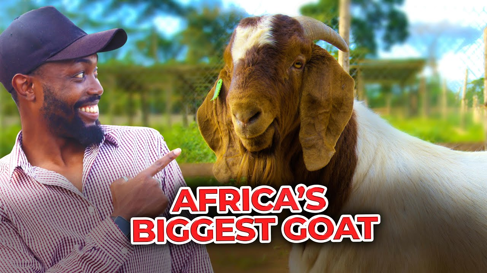

In an African village, a man tried teaching his goat to come when called. After a week, the goat still ran in the opposite direction! His friends laughed: “Your goat listens like my cousin—selectively!” The man said, “At least the goat comes home for dinner. My cousin doesn’t!”
 Back to the main joke page